Age guide: Grades 3–5/6. Caregiver/educator review preview. Not for unsupervised infant digital product use. Not child-validated. Not publication-ready.
Close this preview anytime. No accounts. No tracking. Adult standards/provenance live outside child-facing blocks.